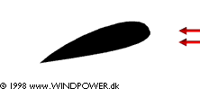

Aerodynamics of Wind Turbines: Stall and Drag

Stall
 Now, what happens if an
aircraft tilts backward in an attempt to climb higher into the sky quickly?
The lift of the wing will indeed increase, as the
wing is tilted backwards, but in the picture you can see that all of a sudden
the air flow on the upper surface stops sticking to the surface of the wing.
Instead the air whirls around in an irregular vortex (a condition which
is also known as turbulence). All of a sudden
the lift from the low pressure on the upper surface of the wing disappears.
This phenomenon is known as stall.
Now, what happens if an
aircraft tilts backward in an attempt to climb higher into the sky quickly?
The lift of the wing will indeed increase, as the
wing is tilted backwards, but in the picture you can see that all of a sudden
the air flow on the upper surface stops sticking to the surface of the wing.
Instead the air whirls around in an irregular vortex (a condition which
is also known as turbulence). All of a sudden
the lift from the low pressure on the upper surface of the wing disappears.
This phenomenon is known as stall.
 An aircraft wing will stall, if the shape of the wing tapers off too
quickly as the air moves along its general direction of motion. (The wing
itself, of course, does not change its shape, but the angle of the the wing
in relation to the general direction of the airflow (also known as the angle
of attack) has been increased in our picture above). Notice that the
turbulence is created on the back side of the wing in relation to
the air current.
An aircraft wing will stall, if the shape of the wing tapers off too
quickly as the air moves along its general direction of motion. (The wing
itself, of course, does not change its shape, but the angle of the the wing
in relation to the general direction of the airflow (also known as the angle
of attack) has been increased in our picture above). Notice that the
turbulence is created on the back side of the wing in relation to
the air current.
 Stall can be provoked if the surface of the aircraft wing - or the wind
turbine rotor blade - is not completely even and smooth. A dent in the wing
or rotor blade, or a piece of self-adhesive tape can be enough to start
the turbulence on the backside, even if the angle of attack is fairly small.
Aircraft designers obviously try to avoid stall at all costs, since an aeroplane
without the lift from its wings will fall like a rock.
Stall can be provoked if the surface of the aircraft wing - or the wind
turbine rotor blade - is not completely even and smooth. A dent in the wing
or rotor blade, or a piece of self-adhesive tape can be enough to start
the turbulence on the backside, even if the angle of attack is fairly small.
Aircraft designers obviously try to avoid stall at all costs, since an aeroplane
without the lift from its wings will fall like a rock.
 On the page on power control
we shall return to the subject of how wind turbine engineers deliberately
make use of the stall phenomenon when designing rotor blades.
On the page on power control
we shall return to the subject of how wind turbine engineers deliberately
make use of the stall phenomenon when designing rotor blades.
Drag
Aircraft designers and rotor blade designers are not just concerned with
lift and stall, however.
 They are also concerned with air resistance, in technical jargon of
aerodynamics known as drag. Drag will normally increase if the area
facing the direction of motion increases.
They are also concerned with air resistance, in technical jargon of
aerodynamics known as drag. Drag will normally increase if the area
facing the direction of motion increases.

|
Back | Home | Forward |
© Copyright 1998 Soren Krohn. All rights reserved.
Updated 6 August 2000
http://www.windpower.org/tour/wtrb/stall.htm